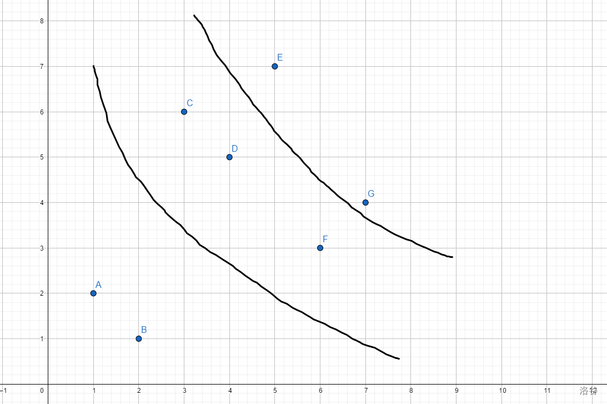

哲学题。
以下标为横轴，$p_i$ 为纵轴，画出一个坐标系。然后你会发现每个点的后继在其右上方，以此为依据来分层（具体来说，就是求出每个位置的 LIS）。
我毛了张图给你看啊：
。
然后在每层搞事情。这里有个结论：
一言
Claim：存在一种选择 LISs 的方案，使得每个 LIS 都不交叉。
证明应该不难吧，因为每两个之间交换了没有影响，每层都看得到。那么选择下标更小的点一定~~苏卡~~不劣。然后优化下搜索的方式就可以解决了，这个具体看代码。
int n,a[1000100],fwt[1000100],dp[1000100],st[1000100],ed[1000100],q[1000100],lis,ans,lst[1000100];
vector<int> rec;
void Add(int x,const int w) { for(; x<=n; x+=x&-x) cmax(fwt[x],w); }
int Sum(int x) { int res=0; for(; x; x^=x&-x) cmax(res,fwt[x]); return res; }
void digger() {
printf("%d %d\n",ans,lis);
for(int i=1; i<=ans; ++i) {
for(int j=(i-1)*lis+1; j<=i*lis; ++j) printf("%d ",rec[j-1]);
puts("");
}
exit(0);
}
signed main() {
n=read();
for(int i=1; i<=n; ++i) {
dp[i]=Sum((a[i]=read())-1)+1;
Add(a[i],dp[i]),cmax(lis,dp[i]);
ed[dp[i]]++;
}
for(int i=1; i<=n; ++i) ed[i]+=ed[i-1],st[i]=ed[i];
for(int i=n; i; --i) q[st[dp[i]]--]=i;
for(int i=1; i<=n; ++i) st[i]=ed[i-1]+1;
for(int i=1; i<=n; ++i) sort(q+st[i],q+ed[i]+1);
while(233) {
for(int i=1; i<=lis; ++i) { // enumrating layers
if(st[i]>ed[i]) digger();
if(a[q[st[i]]]<a[lst[i-1]]) {
----i; st[i+1]++;
continue;
}
while(q[st[i]]<lst[i-1] && st[i]<=ed[i]) {
st[i]++;
if(a[q[st[i]]]<a[lst[i-1]]) {
----i; st[i+1]++;
goto Suc;
}
}
if(st[i]>ed[i]) digger();
lst[i]=q[st[i]];
Suc:;
}
for(int i=1; i<=lis; ++i) rec.push_back(lst[i]),st[i]++;
ans++;
}
return 0;
}